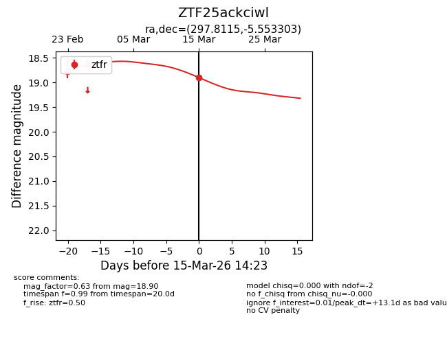
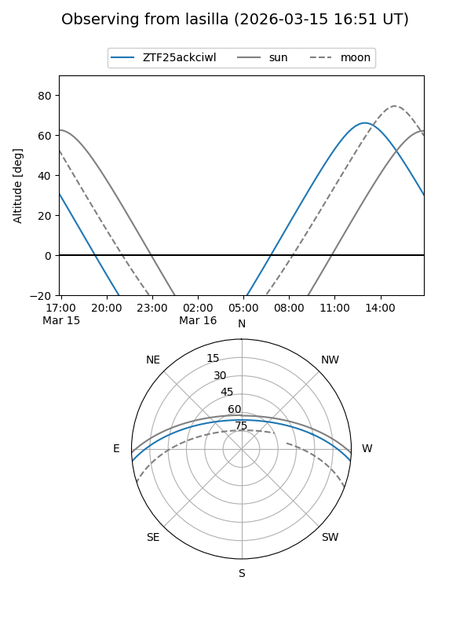
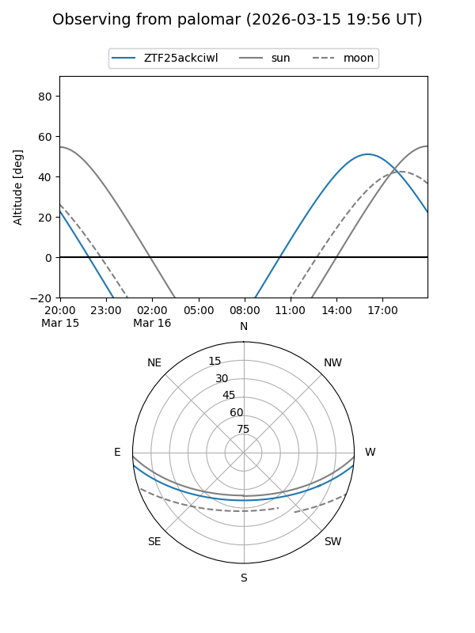
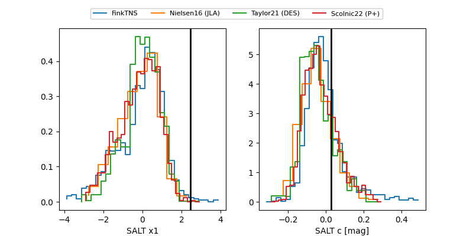

ZTF25ackciwl
Target ZTF25ackciwl at 2026-03-15 14:25
Aliases and brokers:
FINK: link
Lasair: link
ALeRCE: link
alt names
ZTF25ackciwl (ztf,fink_ztf)
Coordinates:
equatorial (ra, dec) = 297.8115,-5.55330
equatorial (HMS+DMS) = 19:51:14.76,-05:33:11.89
galactic (l, b) = (34.7766,-15.82348)
Flags:
Photometry:
last ztfr=18.90
3 ztfr detections
Lightcurve

Visibility


Additional plots
